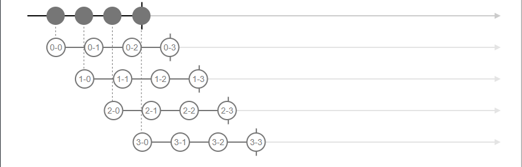
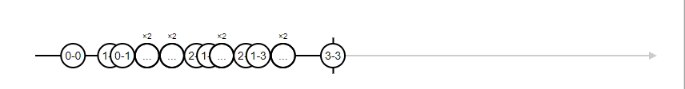
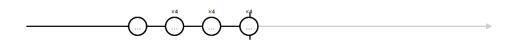
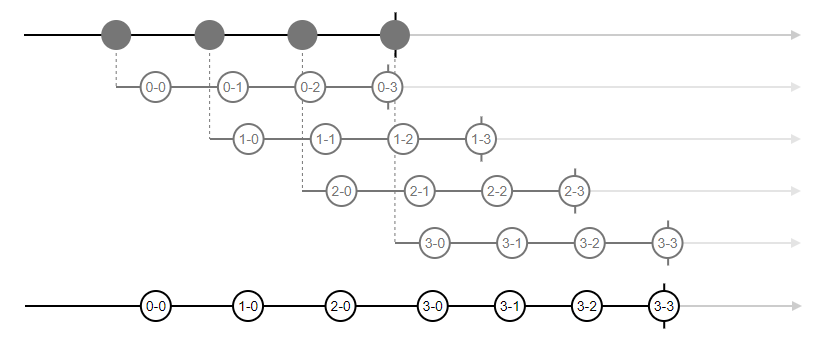
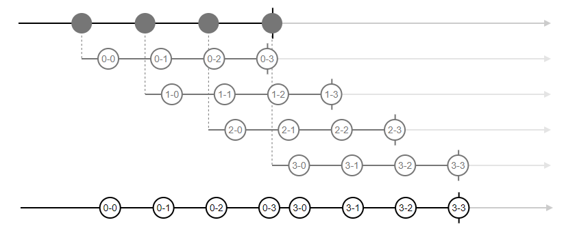
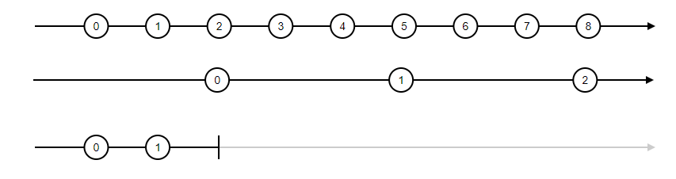
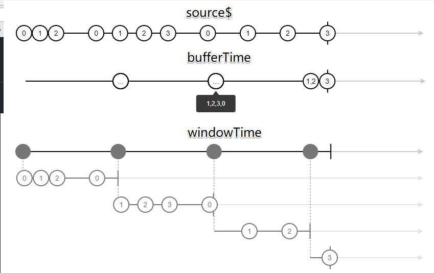

高阶 Observable 操作符
合并类
高阶 Observable 的合并类操作符在 Observable 对象的操作符后面加上了 All，包括concatAll、mergeAll、zipAll、combineAll（combineLatestAll）。
高阶 Observable 操作符没有
withLatestFromAll，因为高阶合并操作符认为内部 Observable 对象是平等的。而withLatestFrom会由输入 Observable 对象控制数据输出节奏，Observable 对象并不平等。
concatAll
concatAll的作用与concat类似，不过concatAll的上游对象是一个高阶 Observable 对象。它会对其中的内部 Observable 对象进行concat操作，即将内部多个 Observable 对象进行concat操作并返回结果 Observable 对象。
当内部 Observable 对象完结速度慢或永不完结时，concatAll的合并速度慢于上游的 Observable 对象产生内部 Observable 对象的速度，这样就会造成数据积压，进而导致内存泄漏。
mergeAll
mergeAll作用同merge。当上游源产生一个内部 Observable 对象时，mergeAll会立刻订阅，并用于合并。
zipAll
zipAll对内部 Observable 对象的作用和zip一样。zipAll必须等到上游源 Observable 对象完结后才能开始，因为zipAll不确定是否还有新的 Observable 对象出现，因此当上游 Observable 永不完结时，zipAll将一直等待。
combineAll
combineAll的作用同combineLatest一样。同样，combineAll也必须等到上游源 Observable 对象完结后才能开始。
zipAll和combineAll会在内部流产生时，收集内部流，并且直到上游流流结束时，才会订阅收集到的内部流。这样会导致由于上游流流吐出的时间间隔而出现的内部流订阅的时间间隔消失，并且所有内部流的订阅时间点推迟到上游流流结束。这一点与mergeAll不同，meregeAll会在内部流产生时订阅。



处理类
switch
当上游流产生一个内部流时，switch 会立刻订阅新的内部流，已经订阅的内部流会被退订。
switch 产生的流只有当上游流且当前订阅的内部流结束时才结束

exhaust
只有当当前订阅的内部流被耗尽时，才会切换到最新产生的内部流
exhaust 产生的流只有当上游流且最新订阅的内部流结束时才结束

switch 和 exhaust 产生的流只有当上游流且当前订阅的内部流结束时才结束
过滤操作符
过滤操作符会根据数据是否满足判定函数来进行对应的操作。
filter
filter即只吐出上游流符合判定函数的数据
first
first接受三个参数——判定函数、结果处理函数和默认值（默认为 null）。当上游数据符合判定函数时，first吐出经结果处理函数处理之后的数据并结束，无需等上游流结束，若等到上游流结束时，仍没有符合条件的数据，那么会吐出经过处理的默认值并结束。
last
last操作符作用和 first 相反，同样也接受三个参数——判断函数、结果处理函数、默认值。
last必须等到上游流结束时，才能确定结果，吐出结果数据。
take、tabkeLast、takeWhile 和 takeUntil
take系列操作符用于取多个数据，take和takeLast会在结束时一次性返回所有符合的数据，而takeWhile和takeUntil会随上游流的节奏吐出符合的数据。
take—— 相当于取多个数据的firsttakeLast—— 相当于取多个的lasttakeWhile——takeWhile会一直吐出上游数据，直到上游数据不满足判定函数takeUntil——takeUntil会一直吐出上游数据，直到参数 notifier 流吐出数据时，停止吐出数据。

skip、skipWhile 和 skipUntil
skip表示跳过若干数据后，吐出和上游流一样的数据
skipWhile与takeWhile、skipUntil与skipUntil一一对应
控制类操作符
控制操作符主要是为了解决上下游速度不一致导致的BackPressure问题，对上游数据进行一定的舍弃，来实现有损的回压控制。
每一类控制操作符默认用另一个流来控制，而简单的以时间做控制的操作符加上了 Time 后缀。
throttle、throtlleTime
debounce、debounceTime
audit、auditTime
sample、sampleTime
转化类操作符
转化类操作符会对数据进行处理，但转化类操作符不会对数据进行过滤，会对数据进行转化和组合。
map、mapTo、pluck
map是最简单、最常用的转化操作符。map会对上游数据进行函数处理，并把返回结果传给下游流。
mapTo会把所有数据映射成同一个数据，并传给下游。
pluck类似根据传入参数 key 来取上游数据中对应 key 的值，并传给下游。plunk只能去一个值，而不能嵌套取值。当对应 key 不存在时，pluck可以把传入的第二个参数作为默认值（默认为 undefined）传给下游。
缓存数组类和缓存 Observable 类
和控制类操作符实现的有损回压控制不同，转化类操作符不会舍弃上游的数据。它会通过将多个数据放在一个数组和 Observable 对象并且一次性传给下游，从而实现无损的回压控制。因此可以把这类操作符分为缓存数组类和缓存 Observable 类，两者的区别只在于传给下游流的数据形式。
- 缓存数组类 bufferTime、bufferCount、bufferWhen、bufferToggle、buffer
- 缓存 Observable 类 windowTime、windowCount、windowWhen、windowToggle、window
bufferTime 和 windowTime
bufferTime和windowTime接受三个参数。第一个参数是区间时间长度，操作符会将下游划分为该时间长度的时间区间，并对这段时间内的数据进行分组，以数组形式或内部流的形式传给下游。
let s1$ = Rx.Observable.timer(0, 200) |

这两个操作符的第二个参数表示每个时间区间开始的时间间隔。因此当第二个参数小于第一个参数时，时间区间会重叠，可能会导致重复的数据，而第二个参数大于第二个参数时，时间区间产生间距，可能会导致数据丢失。
第三个参数表示该区间内最多数据个数。
因此，windowTime产生的内部流会持续一段时间，并在持续时间等于时间区间或达到区间数据上限时结束，而bufferTime会在区间时间结束或达到区间数据上限时将数据数组传给下游。
bufferCount 和 windowCount
windowCount、bufferCount和windowTime、bufferTime类似，区间长度由数据个数决定，根据接受的数据个数来决定数组传给下游或内部流结束的时间。第二个参数表示每隔多少个数据产生区间，因此也会产生丢弃数据和数据重复的现象。
bufferWhen 和 windowWhen
同样的，bufferWhen和windowWhen会根据传入函数返回的 Observable 对象来划分区间，当返回的流产生数据或完结时，操作符会将数据数组传给下游或者结束内部流，产生新的内部流。
bufferWhen和windowWhen没有其他参数。
bufferToggle 和 windowToggle
windowToggle、bufferToggle